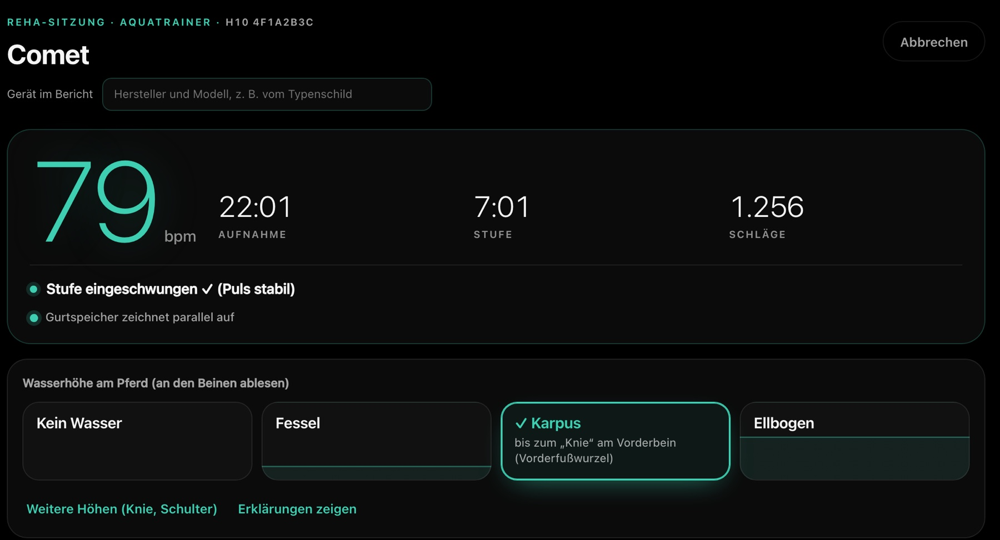
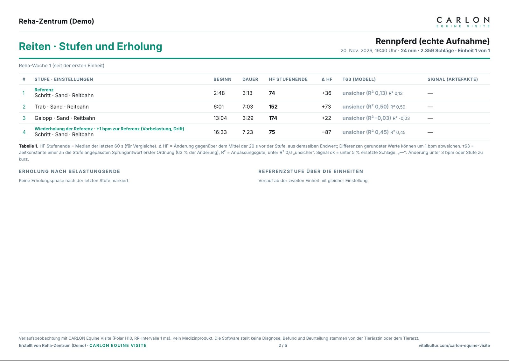
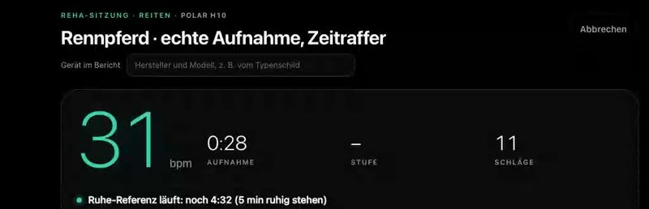
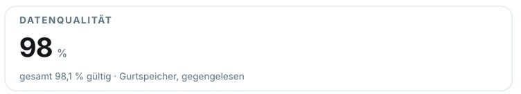
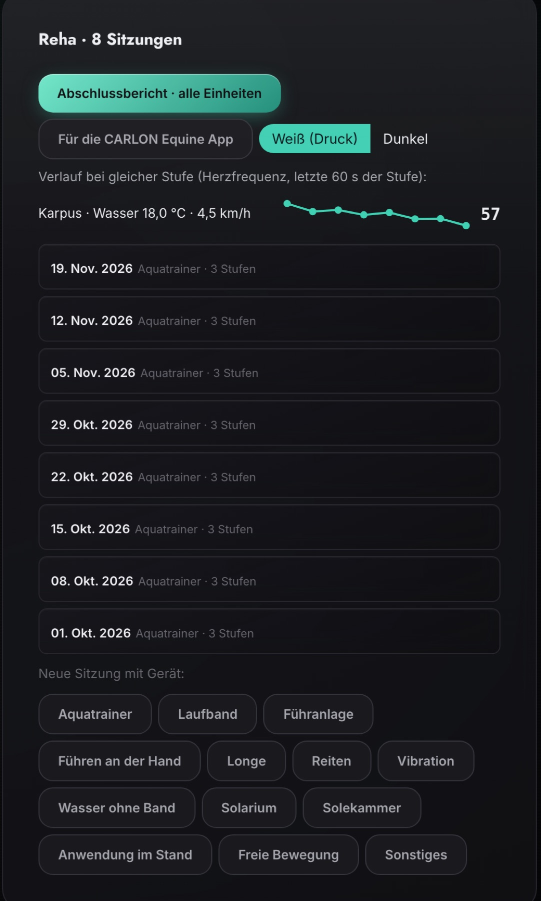
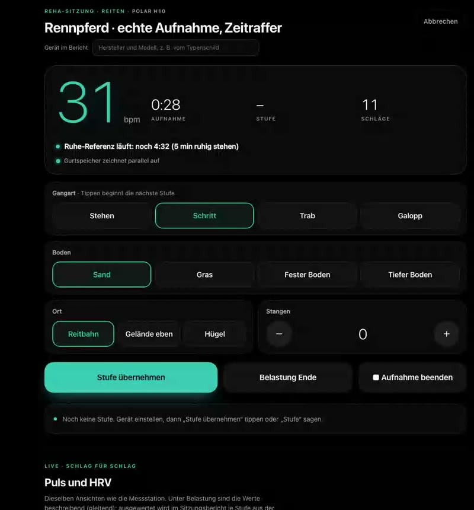

01
Gurt anlegen, Gerät wählen
Jedes Pferd trägt seinen eigenen Gurt. Das Cockpit merkt sich, welcher Gurt zu welchem Pferd gehört, und startet die Aufnahme erst, wenn live und Speicher laufen.
Ein Polar-H10-Gurt zeichnet die Herzfrequenz auf. Ihr Team tippt Gerät und Einstellung mit. Nach der Einheit liegt der Sitzungsbericht vor, über die Wochen die Verlaufsdokumentation für die Halterin.

Jedes Pferd trägt seinen eigenen Gurt. Das Cockpit merkt sich, welcher Gurt zu welchem Pferd gehört, und startet die Aufnahme erst, wenn live und Speicher laufen.
Das Pferd steht ruhig, die App zählt die Zeit herunter. Diese Ruhe-Referenz ist der Ausgangspunkt der Einheit.
Tempo, Wasserhöhe oder Gangart wählen Sie mit großen Tasten, auch mit nassen Händen, oder per Sprache. Jede Stufe liegt auf dem Herzschlag, zu dem sie gehört.

Nach dem Auslesen des Gurts erzeugt die App den Sitzungsbericht: jede Stufe mit Herzfrequenz am Stufenende, Erholung und Datenqualität.
Dasselbe Rennpferd nach dem Galopp im Auslauf in der Führmaschine: Der Puls sinkt auf 43 bis 44 Schläge pro Minute und bleibt dort ruhig.
Ob ein Pferd nach der Arbeit steht oder in der Führanlage geht, verändert die Erholung. Die App hält das Gerät fest, deshalb vergleicht der Bericht nur Erholungen unter derselben Bedingung.
Echte Aufnahme, Minute 32 bis 61 derselben Einheit, 30-facher Zeitraffer. Beginn und Ende des Auslaufs haben wir aus der Pulskurve bestimmt.
Ein Aquatrainer ist meist ein Stahlgehäuse. Es schirmt die Funkverbindung zwischen dem Gurt am Pferd und dem Tablet draußen ab. Der Polar H10 zeichnet deshalb jede Einheit zusätzlich im eigenen Speicher auf.
Nach der Einheit liest das Cockpit den Speicher aus. Der Bericht rechnet mit dieser vollständigen Reihe. Gelöscht wird der Gurt erst, wenn die ausgelesene Datei geprüft ist.
Das gilt genauso für das Laufband hinter der Wand und für die Longe am anderen Ende der Halle.


Der Bericht zeigt der Halterin, was in der Reha geschieht. Er steht in der Akte, wenn jemand nachfragt.

Herzfrequenz am Ende der Referenzstufe, Erholung und Datenqualität je Einheit. Die Beurteilung bleibt bei Ihnen.

Kein Formular nach der Einheit. Was am Gerät eingestellt war, ist schon während der Arbeit festgehalten.
Sie nimmt die Verlaufsdokumentation mit und kann die Einheiten in ihre CARLON-Equine-App übernehmen.
Bei den sieben Bewegungsanwendungen vergleicht der Bericht Stufen über die Wochen. Bei den übrigen hält er Puls und Einstellung fest.
live empfangenen Schlägen standen in gleicher Reihenfolge im Gurtspeicher. 10 Prüfzyklen mit Auslesen und Gegenlesen.
Eigene Prüfung, Gurt am Menschen getragengültige Schläge in der gezeigten Einheit am Rennpferd, mit Galopp über 2000 m, aus dem Gurtspeicher.
Sitzungsbericht oben, 2.359 SchlägePolar H10 gegen Telemetrie-EKG in Ruhe und beim Führen im Schritt: gute Übereinstimmung bei Herzfrequenz, SDNN und RMSSD nach Artefaktkorrektur.
Kapteijn et al. 2022, Front. Vet. Sci., doi:10.3389/fvets.2022.939534Einordnung: Die Software stellt keine Diagnose und ist nach unserer Einordnung kein Medizinprodukt im Sinne der Verordnung (EU) 2017/745. Befund und Beurteilung stammen von der Tierärztin oder dem Tierarzt; den Zustand von Sehne und Gelenk beurteilen Ultraschall und Lahmheitsuntersuchung. Die Auswertung im Browser wird bei jeder Änderung gegen die CARLON-Equine-App verglichen.
Ein Abo gilt für einen Standort. Gezählt werden Rechner, Tablets und Telefone mit freigeschaltetem Cockpit, nicht Ihre Reha-Geräte. Als Reha-Pferd zählt ein Pferd mit mindestens einer Einheit in den letzten 30 Tagen. Bei 20 Reha-Pferden sind 349 € rechnerisch 17,45 € netto je Pferd und Monat.
14 Tage kostenlos testen: Zahlungsdaten geben Sie beim Start an, heute wird nichts abgebucht. Die Testphase gibt es einmal je Betrieb; ein Stufenwechsel beendet sie. Kündigen Sie innerhalb der 14 Tage unter „Abo verwalten“, entstehen keine Kosten. Danach ist das Monatsabo zum Ende des laufenden Monats kündbar, das Jahresabo zum Ende des Jahres. Die Zahlung wickelt Stripe ab. Nur für Tierarztpraxen, Kliniken und Reha-Betriebe als Unternehmen (§ 14 BGB). AGB · Datenschutz
Nicht im Preis: je Pferd, das gleichzeitig in Reha steht, ein Polar H10 mit Pferdegurt aus dem Fachhandel. Ein Gurt geht nach der Abreise eines Pferds an das nächste.
Praxis ohne Reha-Betrieb? Fahrpraxis ab 149 € und Praxis & Klinik ab 349 € netto im Monat →
Je Pferd, das gleichzeitig in Reha steht, einen Polar-H10-Brustgurt mit Pferdegurt aus dem Fachhandel, dazu ein Android-Tablet oder einen Rechner mit Chrome oder Edge. Auf iPhone und iPad lässt Apple Bluetooth im Browser nicht zu; dort sehen Sie Demo und Berichte an.
Nein. Er zeigt, wie die Herzfrequenz auf die Arbeit antwortet. Den Zustand des Gewebes beurteilen Ultraschall und Lahmheitsuntersuchung, die Beurteilung trifft die Tierärztin oder der Tierarzt.
Tempo, Wasserhöhe, Temperatur und Steigung können die Arbeit des Pferds verändern. Eine Veränderung über die Wochen lässt sich nur bei gleicher dokumentierter Einstellung sinnvoll ablesen. Stufen unter drei Minuten zeigt der Bericht, vergleicht sie aber nicht.
Ein Pferd mit mindestens einer Reha-Einheit in den letzten 30 Tagen. Pferde ohne Einheit bleiben mit ihrer ganzen Akte erhalten und zählen nicht mit.
Heute nicht. Ihr Team tippt die Stufen während der Einheit oder sagt sie an. Eine direkte Übernahme setzt ein offenes Protokoll der Gerätesteuerung voraus.
Auf Ihrem Gerät oder in Ihrem Team-Ordner auf dem eigenen Netzlaufwerk. Wir betreiben keine Datenbank mit Ihren Pferdedaten. Zur Lizenzprüfung meldet sich das Cockpit bei unserem Lizenzdienst, ohne Pferde- oder Messdaten.
Pferde, Aufnahmen und Berichte bleiben lesbar und lassen sich weiter exportieren. Neue Reha-Aufnahmen sind dann gesperrt.
Das Demo-Cockpit ist die vollständige Anwendung. Öffnen Sie die Akte von Comet, erzeugen Sie Sitzungsbericht und Verlaufsdokumentation, und starten Sie mit Ihrem eigenen Gurt eine Reha-Aufnahme.
Fragen vorab beantwortet Jan Rohwedder, Vitalkultur, per E-Mail an jan@vitalkultur.com. Die Antwort kommt meist am selben Tag.